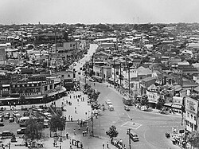

Shibuya foi historicamente o local de um castelo no qual a família Shibuya residiu do século XI até o Período Edo. Seguindo a abertura da Linha Yamanote em 1885,
Shibuya começou a emergir como um terminal ferroviário para o sudoeste de Tóquio e se tornou um dos principais centros comerciais e de entretenimento.
